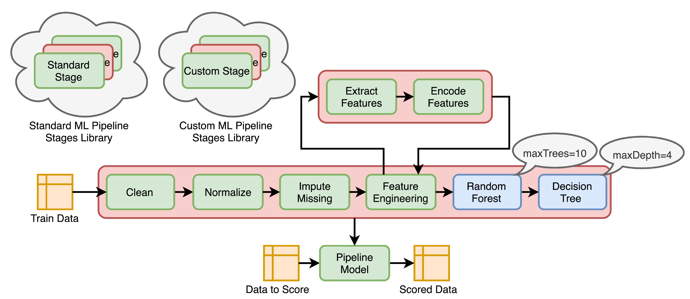
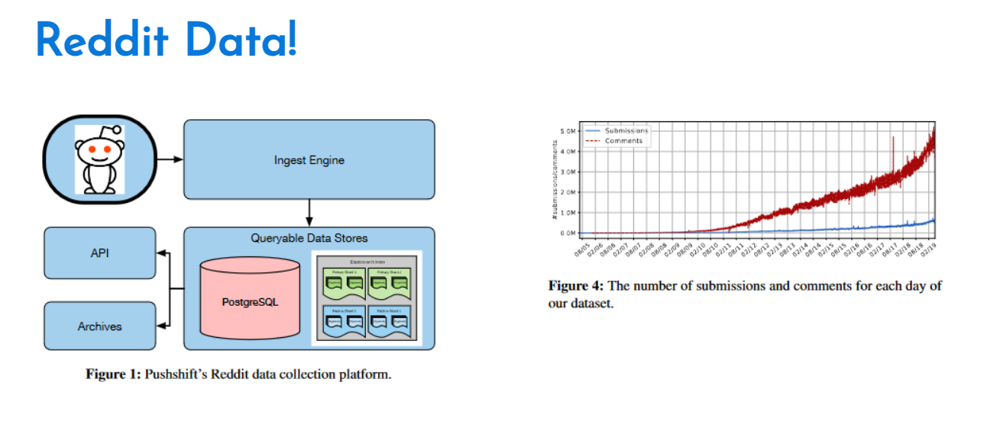

Lecture 10
Project Q&A and Spark Streaming
Georgetown University
Fall 2024
Looking Back
- Intro to Hadoop and MapReduce
- Hadoop Streaming
- Dask
- Spark RDDs, DataFrames, SparkSQL, SparkML, SparkNLP
Future
- Docker containers / Lambda functions
- Data engineering
Today
Project Discussion
Spark Streaming
Lab:
- Spark Streaming
Essential Hardware/Hadoop Topics
AWS Academy
Credit limit - $100
Course numbers:
- Course #1 - 24178
- Course #2 - 27354
- Course #3 - 22802
- Course #4 - 26418
STAY WITH COURSE 24178 UNLESS YOU HAVE RUN OUT OF CREDITS OR >$90 USED!
Note that you will have to repeat several setup steps:
- security group
- EC2 keypair uploading (the AWS part only)
- sagemaker setup
- any S3 uploading or copying as well as bucket creation as necessary
- EMR configuration
Connected and extensible

Caching and Persistence
By default, RDDs are recomputed every time you run an action on them. This can be expensive (in time) if you need to use a dataset more than once.
Spark allows you to control what is cached in memory.
To tell spark to cache an object in memory, use persist() or cache():
cache():is a shortcut for using default storage level, which is memory onlypersist():can be customized to other ways to persist data (including both memory and/or disk)
collect CAUTION

Spark UI - Executors

UDF Speed Comparison

Costs:
- Serialization/deserialization (think pickle files)
- Data movement between JVM and Python
- Less Spark optimization possible
Other ways to make your Spark jobs faster source:
- Cache/persist your data into memory
- Using Spark DataFrames over Spark RDDs
- Using Spark SQL functions before jumping into UDFs
- Save to serialized data formats like Parquet
Pipelines

Most Popular AI/ML Packages

Spark NLP Terminology
Annotators
- Like the ML tools we used in Spark
- Always need input and output columns
- Two flavors:
- Approach - like ML estimators that need a
fit()method to make an Annotator Model or Transformer - Model - like ML transformers and uses
transform()method only
- Approach - like ML estimators that need a
Annotator Models
- Pretrained public versions of models available through
.pretained()method
Project Discussion
Reddit Data!


Assignment Details
Reviewing Project Milestone 1: EDA
Open Q&A
Questions about the project requirements?
Questions about using Databricks?
Start your AWS Spark Cluster - 1 Master, 1 or 2 Core
Spark Streaming
Up to now, we’ve worked with batch data
Processing large, already collected, batches of data.

Batch examples
Examples of batch data analysis?
Analysis of terabytes of logs collected over a long period of time
Analysis of code bases on GitHub or other large repositories of textual information such as Wikipedia
Nightly analysis on large data sets collected over a 24 hour period
Streaming Examples
Examples of streaming data analysis?
Credit card fraud detection
Sensor data processing
Online advertising based on user actions
Social media notifications
International Data Coporation (IDC) forecasts that by 2025 IoT devices will generate 79.4 zettabytes of data.
How do we work with streams?
Processing every value coming from a stream of data. That is, data values that are constantly arriving
Spark solved this problem by creating DStreams using microbatching
DStreams are represented as a sequence of RDDs.
A StreamingContext object can be created from an existing SparkContext object.
Important points about StreamingContext
Once the context has been started, no new streaming computations can be setup or added
Once a context has been stopped, it cannot be restarted
Only one
StreamingContextcan active with a Spark session at the same timestop()on theStreamingContextalso stops the theSparkContextMultiple
StreamingContextcan be created as long as the previous one is stopped
DStreams had some issues
Lack of a single API for batch and stream processing: Even though DStreams and RDDs have consistent APIs (i.e., same operations and same semantics), developers still had to explicitly rewrite their code to use different classes when converting their batch jobs to streaming jobs.
Lack of separation between logical and physical plans: Spark Streaming executes the DStream operations in the same sequence in which they were specified by the developer. Since developers effectively specify the exact physical plan, there is no scope for automatic optimizations, and developers have to hand-optimize their code to get the best performance.
Lack of native support for event-time windows: DStreams define window operations based only on the time when each record is received by Spark Streaming (known as processing time). However, many use cases need to calculate windowed aggregates based on the time when the records were generated (known as event time) instead of when they were received or processed. The lack of native support of event-time windows made it hard for developers to build such pipelines with Spark Streaming.
Structured Streaming (DataFrame) based
What is Structured Streaming?
A single, unified programming model and interface for batch and stream processing
This unified model offers a simple API interface for both batch and streaming workloads. You can use familiar SQL or batch-like DataFrame queries on your stream as you would on a batch, leaving dealing with the underlying complexities of fault tolerance, optimizations, and tardy data to the engine.
A broader definition of stream processing
Big data processing applications have grown complex enough that the line between real-time processing and batch processing has blurred significantly. The aim with Structured Streaming was to broaden its applicability from traditional stream processing to a larger class of applications; any application that periodically (e.g., every few hours) to continuously (like traditional streaming applications) processes data should be expressible using Structured Streaming.
The Programming Model of Structured Streaming
The Programming Model of Structured Streaming
- Every new record received in the data stream is like a new row being appended to the unbounded input table.
- Structured Streaming will automatically convert this batch-like query to a streaming execution plan. This is called incrementalization
- Structured Streaming figures out what state needs to be maintained to update the result each time a record arrive
- Finally, developers specify triggering policies to control when to update the results. Each time a trigger fires, Structured Streaming checks for new data (i.e., a new row in the input table) and incrementally updates the result.
Specifying output mode
Append mode
Only the new rows appended to the result table since the last trigger will be written to the external storage. This is applicable only in queries where existing rows in the result table cannot change (e.g., a map on an input stream).
Update mode
Only the rows that were updated in the result table since the last trigger will be changed in the external storage. This mode works for output sinks that can be updated in place, such as a MySQL table.
Complete mode
The entire updated result table will be written to external storage.
The 5 Fundamentals steps of a Structured Streaming Query
Define input sources
Transform data
Define output sink and output mode
Specify processing details
Start the query
1. Define input sources
- This code generates the lines
DataFrameas an unbounded table of newline-separated text data read fromlocalhost:9999. Note that, similar to batch sources with spark.read, this does not immediately start reading the streaming data; it only sets up the configurations necessary for reading the data once the streaming query is explicitly started. - Besides sockets, Apache Spark natively supports reading data streams from Apache Kafka and various file-based formats (Parquet, ORC, JSON, etc.). A streaming query can define multiple input sources, both streaming and batch, which can be combined using DataFrame operations like unions and joins.
2. Transform data
- Now we can apply the usual DataFrame operations
- Note that these operations to transform the lines streaming DataFrame would work in the exact same way if lines were a batch DataFrame.
3. Define output sink and output mode
4. Specify Processing details
Triggering details
- Default: When the trigger is not explicitly specified, then by default, the streaming query executes data in micro-batches where the next micro-batch is triggered as soon as the previous micro-batch has completed.
- Processing time with trigger interval: You can explicitly specify the Processing Time trigger with an interval, and the query will trigger micro-batches at that fixed interval.
- Once: In this mode, the streaming query will execute exactly one micro-batch. It processes new data available in a single batch and then stops itself. This is useful when you want to control the triggering and processing from an external scheduler that will start the query on a schedule (e.g., to control cost by only executing a query once per day).
- Continuous: experimental as of Spark 3.0
5. Start the query
Spark Streaming under the hood
- Spark SQL analyzes and optimizes this logical plan to ensure that it can be executed incrementally and efficiently on streaming data.
- Spark SQL starts a background thread that continuously executes a loop
- This loop continues until the query is terminated
Spark Streaming under the hood
The loop
Based on the configured trigger interval, the thread checks the streaming sources for the availability of new data.
If available, the new data is executed by running a micro-batch. From the optimized logical plan, an optimized Spark execution plan is generated that reads the new data from the source, incrementally computes the updated result, and writes the output to the sink according to the configured output mode.
For every micro-batch, the exact range of data processed (e.g., the set of files or the range of Apache Kafka offsets) and any associated state are saved in the configured checkpoint location so that the query can deterministically reproc‐ ess the exact range if needed.
Spark Streaming under the hood
The loop continues until the query is terminated which can be for one of the following reasons:
A failure has occurred in the query (either a processing error or a failure in the cluster).
The query is explicitly stopped using streamingQuery.stop().
If the trigger is set to
Once, then the query will stop on its own after executing a single micro-batch containing all the available data.
Data Transformations
Each execution is considered as a micro-batch. DataFrame operations can be broadly classified into stateless and stateful operations based on whether executing the operation incrementally requires maintaining a state.
Stateless Transformations
All projection operations (e.g., select(), explode(), map(), flatMap()) and selection operations (e.g., filter(), where()) process each input record individually without needing any information from previous rows. This lack of dependence on prior input data makes them stateless operations.
A streaming query having only stateless operations supports the append and update output modes, but not complete mode. This makes sense: since any processed output row of such a query cannot be modified by any future data, it can be written out to all streaming sinks in append mode (including append-only ones, like files of any format). On the other hand, such queries naturally do not combine information across input records, and therefore may not reduce the volume of the data in the result. Complete mode is not supported because storing the ever-growing result data is usually costly. This is in sharp contrast with stateful transformations, as we will discuss next.
Stateful Transformations
The simplest example of a stateful transformation is DataFrame.groupBy().count(), which generates a running count of the number of records received since the beginning of the query. In every micro-batch, the incremental plan adds the count of new records to the previous count generated by the previous micro-batch. This partial count communicated between plans is the state. This state is maintained in the memory of the Spark executors and is checkpointed to the configured location in order to tolerate failures. While Spark SQL automatically manages the life cycle of this state to ensure correct results, you typically have to tweak a few knobs to control the resource usage for maintaining state. In this section, we are going to explore how different stateful operators manage their state under the hood.
Stateful Streaming Aggregations
Structured Streaming can incrementally execute most DataFrame aggregation operations. You can aggregate data by keys (e.g., streaming word count) and/or by time (e.g., count records received every hour).
Aggregations Not Based on Time
Aggregations with Event-Time Windows
Mapping of event time to tumbling windows
Mapping of event time to multiple overlapping windows
Updated counts in the result table after each five-minute trigger

Using watermarks
A watermark is defined as a moving threshold in event time that trails behind the maximum event time seen by the query in the processed data. The trailing gap, known as the watermark delay, defines how long the engine will wait for late data to arrive.
AWS Kinesis
- Similar to Apache Kafka
- Abstracts away much of the configuration details
- Costs based on usage
Read more comparisons here.
Spark SQL Connector for AWS Kinesis
Connector to make Kinesis work with Spark Structured Streaming
https://github.com/qubole/kinesis-sql